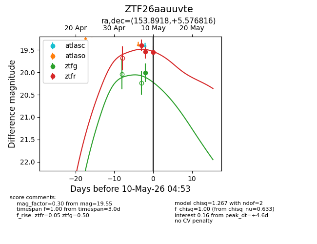
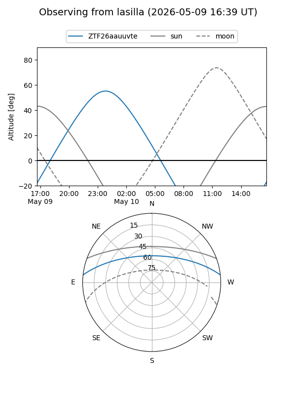
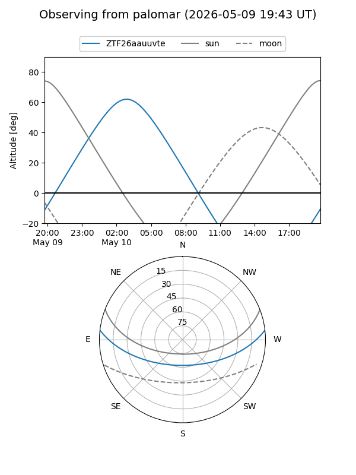
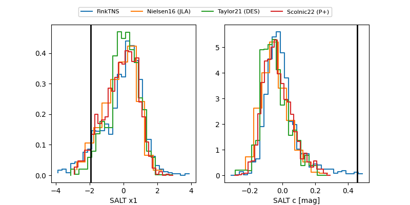

ZTF26aauuvte
Target ZTF26aauuvte at 2026-05-10 04:54
Aliases and brokers:
FINK: link
Lasair: link
ALeRCE: link
alt names
ZTF26aauuvte (ztf,fink_ztf)
Coordinates:
equatorial (ra, dec) = 153.8918,+5.57682
equatorial (HMS+DMS) = 10:15:34.03,+05:34:36.54
galactic (l, b) = (235.9846,+47.13881)
Flags:
Photometry:
last ztfg=20.01, ztfr=19.55
1 ztfg, 3 ztfr detections
Lightcurve

Visibility


Additional plots
